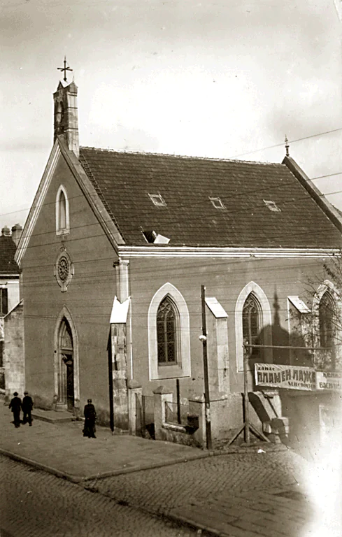
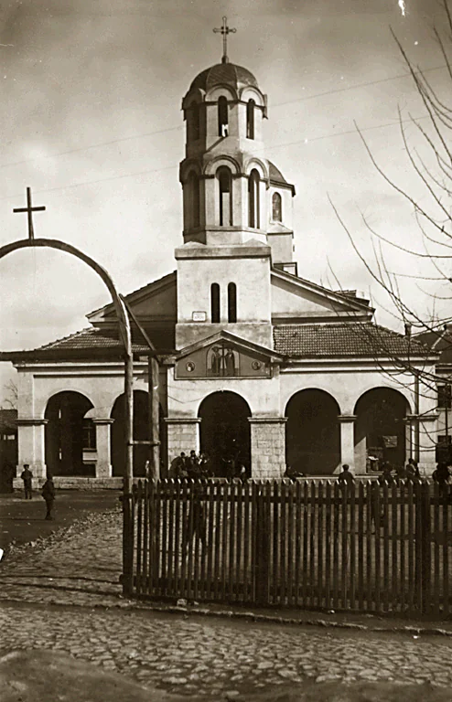

Shën Spasi
- Prodhimi
- UFUŽ dhe Dokumentar Filmi Pragë
- Skenari dhe regjia
- Slavko Janevski dhe EMAN CANERA
- Viti
- 1959
- Kohëzgjatja
- 00:31

Kisha Shën Pantelejmoni, mbi fshatin Gorno Nerezi, në jugperëndim të Shkupit, e ngritur nga Aleksi Komneni, nga familja e Komnenëve, më 1164. Deri më sot është ruajtur mbishkrimi në arkitraun prej mermeri mbi derën nga narteksi në naos. Ndërtesa ka një nef, me kube qendrore tetëkëndëshe prej guri e tulle dhe katër kube të vogla katërkëndëshe në qoshet e kishës. Kisha është monumenti më i vjetër bizantin jo vetëm në Shkup, por edhe në Maqedoni. U pikturua menjëherë pas ndërtimit; më vonë, në shekujt XV, XVI dhe XIX u ripikturua, por afresket e para e bëjnë monument të rëndësisë së parë.


Shën Mëria, ndërtuar më 1835, ndodhej në bregun e majtë të Vardarit. Ka ndikime të arkitekturës bizantine, me elemente barokë e urbane bashkëkohore në trajtimin e hapësirës. U dogj gjatë Luftës së Dytë Botërore; deri atëherë ishte kishë katedrale e qytetit. Pas saj katedrale u bë Shën Dimitri. (vitet 1920)

Kisha Shën Mëria - vitet 1920.

Tubim i popullit në festën e Vidovdanit, në oborrin e kishës Shën Mëria - 1919.

Kisha Shën Dimitri u ndërtua në shekullin XVIII në vendin e kishës mesjetare Shën Dimitri. U riparua më 1886-94, kur u bënë gardhi dhe kambanorja. Deri më 1980 ishte kishë katedrale. Ndodhet në bregun e majtë të Vardarit pranë Urës së Gurit (vitet 1920).

Kisha Shën Dimitri - vitet 1930.

Mitropolia e Shkupit. Ndodhej në kejin e bregut të majtë të Vardarit - vitet 1920.

Rruga kryesore gjatë formimit të saj (sot rruga "Makedonija", që shtrihet nga Muzeu i sotëm i Qytetit të Shkupit drejt Urës së Gurit). Djathtas duket kisha katolike (Shtëpia Shën Marta) në stil gotik, e ndërtuar me donacion të qeverisë austriake, ndërsa majtas disa ndërtesa. Pjesa e rrugës pranë Urës së Gurit u shtrua më 1911 që të kalonte sulltani Mehmedi V (Reshadi), i cili erdhi të vizitonte Shkupin para nisjes për në Fushë Kosovë.

Kisha katolike në stil gotik, ndërtuar në fillim të shekullit XX - vitet 1920.

Rruga kryesore drejt sheshit. Në plan të parë është kisha katolike. (vitet 1950)

Rruga kryesore drejt stacionit hekurudhor (Muzeu i sotëm i Qytetit të Shkupit). Majtas duket kisha katolike. (vitet 1950)

Kambanorja e kishës Shën Spasi - vitet 1910.

Kisha Shën Spasi ndodhet përballë Kalasë së Shkupit. U ngrit në fund të shekullit XVII. Është kishë e vogël, gjysmë e futur në tokë. Dallohet për një nga ikonostaset më të vjetra e më të bukura, punuar në dru me gdhendje të thellë nga vëllezërit Frčkovski nga Galičniku: Petre, si udhëheqës, Marko dhe Makarija, që janë paraqitur në anën e djathtë të ikonostasit. Ikonostasi u punua më 1814 - 1824. Fotografia është bërë në vitet 1920.

Oborri i kishës Shën Spasi. Fotografia është bërë në vitet 1930.

Panoramë e Shkupit. Në plan të parë poshtë është kisha Shën Spasi - vitet 1970.

Kisha Shën Gjergji - në lagjen "Çair" - vitet 1930.

Kisha "Shën Konstandini dhe Shën Helena". - vitet 1930.

Tempulli i Lavdisë dhe varrezat ushtarake nga Luftërat Ballkanike. Shenjtëruar më 1928. (vitet 1930)

 Ujësjellësi4 kartolina
Ujësjellësi4 kartolina Kalaja30 kartolina
Kalaja30 kartolina Urat60 kartolina
Urat60 kartolina Kej58 kartolina
Kej58 kartolina Sheshi46 kartolina
Sheshi46 kartolina Ndërtesat66 kartolina
Ndërtesat66 kartolina Kishat e krishtera19 kartolina
Kishat e krishtera19 kartolina Objektet myslimane33 kartolina
Objektet myslimane33 kartolina Shtëpia e Oficerëve29 kartolina
Shtëpia e Oficerëve29 kartolina Teatri28 kartolina
Teatri28 kartolina Stacioni hekurudhor13 kartolina
Stacioni hekurudhor13 kartolina Shkollat36 kartolina
Shkollat36 kartolina Parqet12 kartolina
Parqet12 kartolina Tregjet18 kartolina
Tregjet18 kartolina Rrugët38 kartolina
Rrugët38 kartolina Panorama I60 kartolina
Panorama I60 kartolina Panorama II30 kartolina
Panorama II30 kartolina Kolazhe55 kartolina
Kolazhe55 kartolina Përmbytjet9 kartolina
Përmbytjet9 kartolina Tërmeti27 kartolina
Tërmeti27 kartolina Shkupi 200026 kartolina
Shkupi 200026 kartolina